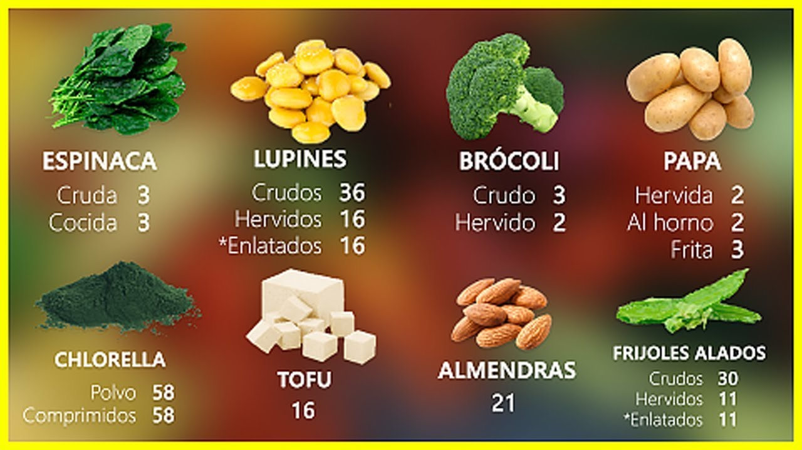

20 Vegetales Para Cultivar En Macetas - Trucos De Jardineria
2020.09.14 13:19
Vegetales Frutas Tropicales Hierbas Frutas Flores & Plantas
20 Vegetales Para Cultivar En Macetas
By Milly / May 9, 2018 Pin 56K Share 340K Tweet WhatsApp 396K SharesHay algunos vegetales que simplemente crecen mejor, más rápido y más abundante en macetas! Por esto hemos decidido juntar los mejores 20 vegetales para cultivar en macetas. Esto no requiere espacio de jardín, así que incluso si vives en un apartamento, un balcón debería ser más que suficiente para cultivar cualquiera de estos!
Vegetales Para Cultivar En Macetas
#1. TOMATES
Los tomates , una de las mejores y más fáciles plantas para cultivar en una maceta, puede dar una grande cantidad de frutos en poco tiempo. Solo asegúrate que reciban mucho sol, alrededor de 5-6 horas al día.
#2. FRIJOLES
Los frijoles son escaladores, por esto necesitan bastante espacio en el suelo. Una vez que siembres frijoles, asegúrate que tengan un enrejado o una cerca para treparse, y que reciban 5-6 horas de sol al día. La maceta debe ser al menos 12 pulgadas profundo. Si estas sembrando frijoles en una maceta más grande, también puedes combinarlos con col rizada y apio.
#3. LECHUGA
La lechuga crece super rápido y producirá muchos tallos! Siembra tu lechuga ya sea en la primavera o en el invierno, (si vives en un clima cálido!). Asegúrate de separarla al menos 4 pulgadas de cada planta y siémbrala en macetas grandes.
#4. PIMIENTOS MORRONES
Los pimientos y los chiles aman ser cultivados en macetas, pero solo necesita muchos son! Las macetas lucirán hermosas y tendrás un montón de pimientos en cuestión de poco tiempo! Asegúrate de cultivar pimientos en una maceta que es al menos 12 pulgadas profundo. Aprende más a como cultivar pimientos morrones en una maceta .
#5. BERENJENA
Las berenjenas necesitan macetas grandes, esto es porque son muy susceptibles a las pestes, estas prefieren macetas! Mantenlas en pleno sol y cultívalas en el verano – las berenjenas aman el calor, esto las hace ideales para cultivar en climas cálidos.
#6. RÁBANOS
Los rábanos son unos de los vegetales más fáciles de cultivar en una maceta por qué no ocupan mucho espacio y pueden ser cosechados bastante rápido! Necesitan macetas pequeñas, pero anchas, así que una maceta que es alrededor de 6 pulgadas profundo funcionará perfectamente para variedades pequeñas, mientras que una maceta más grandes necesitada para variedades grandes.
#7. COL ASIÁTICO
Los cole asiáticos aman ser cultivados en macetas ya que no necesitan mucho espacio o mucho sol. Puedes colocarlo en un espacio sombrado que solo recibirá luz solar en la mañana, y asegurarte que estén fertilizados y consigan bastante agua.
#8. ESPINACAS
Para cultivar espinacas , elige una maceta que sea al menos 6-8 pulgadas profundo y colócala en un lugar semi soleado. No necesitan un montón de luz solar e incluso pueden crecer en el alféizar de la ventana.
#9. GUISANTES
Los guisantes son excelentes para cultivar en contenedores por que no necesitan mucho espacio o cuidado. Riega regularmente y mantenlos bajo luz solar parcial.
#10. ZANAHORIAS
Las zanahorias tampoco toman mucho espacio, y pueden ser cultivadas en climas fríos. Asegúrate de suplirlas con mucha agua ya que las raíces pueden secarse y romperse.
#11. PEPINOS
Cultiva pepinos en una maceta de tamaño mediano a largo y asegúrate que reciban mucha agua y sol. Los pepinos también pueden crecer hacia abajo si les das un soporte! Lee 10 consejos para cultivar pepinos .
#12. CALABACÍN
La calabaza, o el calabacín, es uno de los vegetales que mejor crecen en balcón y techos ya que crecen super fase y no necesita mucho espacio. Lee 10 consejos para cultivar calabacines .
#13. COL RIZADA
Cole rizada, una verdura que crece en climas fríos y en macetas, y puede ser cosechada muchas veces una y otra vez. Asegúrate de no mantenerlas en pleno sol, ya que puede marchitarse y morir. Aprende más acerca de como cultivar col rizada en contenedores .
#14. ACELGAS
Cultivar acelgas es como cultivar col rizado, a excepción que las acelgas pueden tolerar regiones más cálidas. Solo requieren una maceta de 6 pulgadas, y crecen extremadamente rápido. Si vives en un clima cálido, considera sembrar las acelgas al final del verano.
#15. MOSTAZA
Las hojas de mostaza no requieren mucho cuidado u atención, aman mucho el sol y la calidez. No necesitan una maceta grande – la mayoría de las verduras no se expanden mucho!
#16. AJO
Escoge una maceta que sea al menos 6-8 pulgadas profundo y tan ancho como sea posible. También querrás sembrar tu bajo tu planta de ajo 5-6 pulgadas de distancia entre cada una.
#17. RUIBARBO
Para cultivar ruibarbo, necesitas una maceta profunda y tierra bien drenada, pero después de esto, cultivar ruibarbo es super fácil! No requiere mucho cuidado, el ruibarbo crece fácilmente en climas más fríos.
#18. MELÓN AMARGO
Necesitarás una maceta de 12 pulgadas profundo y un enrejado para cultivar melón amargo, pero es bastante similar a cultivar calabaza, calabacín y pepinos. Dale bastante agua y sol y crecerá como loco!
#19. QUIMBOMBÓ
Elige una variedad de quimbombó enana para cultivar en contenedores ya que son más pequeñas. El quimbombó ama la calidez, por esto asegúrate de plantarlos en el verano, dale bastante luz solar y agua.
#20. COL VERDE
El col verde es otro vegetal fácil de cultivar en macetas ya que no requieren mucho cuidado y son una buena alternativa como espinaca.
¡Feliz Plantación!
3.3 3 votes Article Rating Pin 56K Share 340K Tweet WhatsApp 396K Shares Subscribe 1 Comment oldest newest most voted Inline Feedbacks View all comments Fanny 2 months ago
Si tomo una semilla de una berenjena o cualquier vegetal fresco , tengo que poner a secar esa semilla antes de ponerla en la.ma eta con tierra o es mejor ponerla de una en la maceta con su tierra o hay que angws ponerla.a germinar en un cololador, por ejemplo. Y, en ese último caso, supongo q no habria ponerla a germinar
3 Reply ←Previous post Next postArticulos Populares
Como Cultivar Tomates Cherry En Macetas 7 Hierbas Que Crecen En Agua Cómo Cultivar Lavanda a Partir de Esquejes Como Cultivar Árboles De Dátiles Como Cultivar Higos En Tu Jardín O En Una Maceta Guía Infalible Para Cultivar Rosas: La Rosas Más Fáciles De Cultivar Como Cultivar Uvas En Macetas Como Cultivar Kiwi En Una Maceta Como Cultivar Culantro Jardín Casero De Hierbas En Tarros MasónLatest posts
Cómo Cultivar Ajo en Interiores
January 17, 2020 / By MillyCómo Cultivar Aguacate en Interiores
January 15, 2020 / By Milly¿Con Qué Frecuencia se Riegan las Flores de Pascua? Y Otros Consejos de Cuidado para las Flores de Pascua
January 8, 2020 / By MillyJardín de Vegetales de Invierno
January 4, 2020 / By MillyCómo Hacer un Jardín de Hierbas en Interiores
January 2, 2020 / By MillyCómo Cultivar Chiles Fantasmas en Interiores
December 21, 2019 / By MillyConsejos para Cultivar Pimientos en Interiores
December 19, 2019 / By MillyCómo Cultivar Chiles en Interiores
December 17, 2019 / By MillyCuán Separados se Plantan los Tomates
November 30, 2019 / By MillyCómo Plantar Árboles Arborvitae
November 28, 2019 / By MillyCopyright text 2018 by Trucos De Jardineria.
Contact Us Terms and Conditions DMCA Policy Copyright Notice Disclaimer Privacy Policy wpDiscuz Insert 396K Shares Pin 56K Share 340K Tweet WhatsApp Update cookie preferences- Importancia de los Vegetales
- 253 mejores imágenes de Laminas de Vegetales y Legumbres ...
- Vegetales | Vegetales24
- 'Chips' vegetales: ¿son más sanas que las patatas fritas ...
- Albóndigas vegetales -Mejor Con Salud-
- Vegetales – Incalfer
- Vallejo Frutas y Vegetales
- Frutas y Vegetales en Inglés - Abingles.com
- VEGGIE PACK Panamá – Delivery de Vegetales y Frutas Frescas
- Nombres de Vegetales en Español [Verduras y Vegetales Verdes]
- Importancia de los Vegetales
Vegetables | Vegetales . Spain's finest vegetables can now grace your dinner table. Choose from such popular brands as Viter, Mamia, and more. These vegetables are especially delicious when accompanying your favorite fish, meat or poultry dish. Hida Roasted Piquillo Peppers With Fried Tomato Net.Wt 340 Gr.
- 253 mejores imágenes de Laminas de Vegetales y Legumbres ...
Los vegetales en ambos casos son remolacha, boniato y chirivía; y —según dicen los paquetes— no tienen ni sabores ni colorantes añadidos. Es cierto, al igual que en la anterior, el gusto de ...
- Vegetales | Vegetales24
Los vegetales que hoy consumimos, tanto frutas como verduras en su enorme diversidad, han sido alguna vez domesticadas por diferentes grupos de seres humanos: mientras en Europa siempre fue central el trigo, en América se había desarrollado profundamente el cultivo del maíz.En la actualidad, cada región del planeta posee un detallado calendario de plantación de vegetales que tiene que ver ...
- 'Chips' vegetales: ¿son más sanas que las patatas fritas ...
Hay algunos vegetales que simplemente crecen mejor, más rápido y más abundante en macetas! Por esto hemos decidido juntar los mejores 20 vegetales para cultivar en macetas. Esto no requiere espacio de jardín, así que incluso si vives en un apartamento, un balcón debería ser más que suficiente para cultivar cualquiera de estos! Vegetales Para Cultivar En Macetas #1.
- Albóndigas vegetales -Mejor Con Salud-
B Vegetales. Perejil Por 200gr $ 1.25. Frutas. Quick View. Frutas, Otros Productos. Jugo de Naranja Por 1/2 Galon $ 5.25. Añadir a la lista de deseos. Añadir al carrito. Quick View. Frutas. Papaya Por Unidad $ 1.75. Añadir a la lista de deseos. Añadir al carrito. Quick View. Frutas. Kiwi Por Unidad $ 0.50. Añadir a la lista de deseos ...
- Vegetales – Incalfer
Aunque el pescado es una buena fuente de ácidos grasos omega-3, también se pueden encontrar en muchos vegetales como las coles de Bruselas, col rizada, espinacas y ensalada de verduras de hojas. Alimentos ricos en vitamina E.
- Vallejo Frutas y Vegetales
Frutas y vegetales en el idioma inglés. Como se escriben y como se dicen en ingles
- Frutas y Vegetales en Inglés - Abingles.com
Frutas y verduras que son contables Todo lo que sea contable podemos expresarlo como una determinada cantidad: - O nion (cebolla) - Grape (uva) - Pear (pera) - P each (durazno) - R adish (rábano) - E ggplant (berenjena) - P epper (pimentón) - P ineapple (Piña) - B anana (cambur) - Orange (naranja)
- VEGGIE PACK Panamá – Delivery de Vegetales y Frutas Frescas
Pronunciación en inglés de vegetables. Aprende a pronunciar vegetables en inglés con videos, audio y desgloses silábicos de los Estados Unidos y el Reino Unido.
- Nombres de Vegetales en Español [Verduras y Vegetales Verdes]
Las líneas para procesado de vegetales ofrecen la más moderna tecnología para procesos contínuos, adaptados a las necesidades de producción y posibilidades económicas de los procesadores de vegetales. El diseño modular y la gran variedad de equipos disponibles permiten configurar la línea ideal para cada aplicación.
Vegetables | Vegetales . Spain's finest vegetables can now grace your dinner table. Choose from such popular brands as Viter, Mamia, and more. These vegetables are especially delicious when accompanying your favorite fish, meat or poultry dish. Hida Roasted Piquillo Peppers With Fried Tomato Net.Wt 340 Gr.
Los vegetales en ambos casos son remolacha, boniato y chirivía; y —según dicen los paquetes— no tienen ni sabores ni colorantes añadidos. Es cierto, al igual que en la anterior, el gusto de ...
Los vegetales que hoy consumimos, tanto frutas como verduras en su enorme diversidad, han sido alguna vez domesticadas por diferentes grupos de seres humanos: mientras en Europa siempre fue central el trigo, en América se había desarrollado profundamente el cultivo del maíz.En la actualidad, cada región del planeta posee un detallado calendario de plantación de vegetales que tiene que ver ...
Hay algunos vegetales que simplemente crecen mejor, más rápido y más abundante en macetas! Por esto hemos decidido juntar los mejores 20 vegetales para cultivar en macetas. Esto no requiere espacio de jardín, así que incluso si vives en un apartamento, un balcón debería ser más que suficiente para cultivar cualquiera de estos! Vegetales Para Cultivar En Macetas #1.
B Vegetales. Perejil Por 200gr $ 1.25. Frutas. Quick View. Frutas, Otros Productos. Jugo de Naranja Por 1/2 Galon $ 5.25. Añadir a la lista de deseos. Añadir al carrito. Quick View. Frutas. Papaya Por Unidad $ 1.75. Añadir a la lista de deseos. Añadir al carrito. Quick View. Frutas. Kiwi Por Unidad $ 0.50. Añadir a la lista de deseos ...
Aunque el pescado es una buena fuente de ácidos grasos omega-3, también se pueden encontrar en muchos vegetales como las coles de Bruselas, col rizada, espinacas y ensalada de verduras de hojas. Alimentos ricos en vitamina E.
Frutas y vegetales en el idioma inglés. Como se escriben y como se dicen en ingles
Frutas y verduras que son contables Todo lo que sea contable podemos expresarlo como una determinada cantidad: - O nion (cebolla) - Grape (uva) - Pear (pera) - P each (durazno) - R adish (rábano) - E ggplant (berenjena) - P epper (pimentón) - P ineapple (Piña) - B anana (cambur) - Orange (naranja)
Pronunciación en inglés de vegetables. Aprende a pronunciar vegetables en inglés con videos, audio y desgloses silábicos de los Estados Unidos y el Reino Unido.
Las líneas para procesado de vegetales ofrecen la más moderna tecnología para procesos contínuos, adaptados a las necesidades de producción y posibilidades económicas de los procesadores de vegetales. El diseño modular y la gran variedad de equipos disponibles permiten configurar la línea ideal para cada aplicación.
